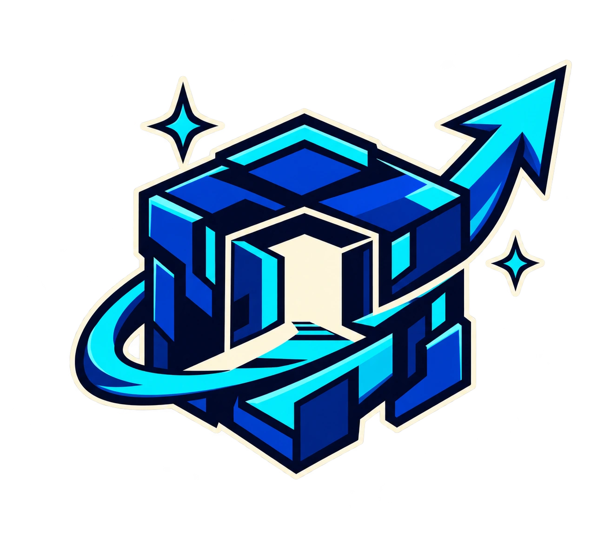

มีเกมให้คนเล่นจริง
สร้างเกมที่เปิดเล่นได้ พร้อมเดโมสำหรับนำเสนอ

STAR UP1 YEAR. YOUR GAME. YOUR NEXT LEVEL.
เรียน Unity กับ C# สร้างเกม ทำงานเป็นทีม
พาผลงานไปสู่พอร์ตและเวทีที่อยากไป

FROM SOLO TO SQUAD.
เขียนโค้ด ออกแบบด่าน แบ่งงาน
แล้วประกอบทุกทักษะให้เป็นเกมเดียวกัน

สร้างเกมที่เปิดเล่นได้ พร้อมเดโมสำหรับนำเสนอ
เล่าทักษะและส่วนที่รับผิดชอบจากงานที่ลงมือทำ
เตรียมเรื่องราวของเกม สำหรับพอร์ตและเวทีที่สนใจ
TAKE YOUR GAME OUTSIDE.
ฝึกทำงานเป็นทีม
พัฒนาเดโม และเล่าผลงานให้คนเข้าใจ
เป็นเวทีเป้าหมายเพื่อเตรียมความพร้อม การเข้าร่วมขึ้นอยู่กับกำหนดการ คุณสมบัติ และเกณฑ์ของผู้จัดแต่ละปี ไม่รวมการรับประกันรางวัลหรือการเข้าศึกษา
ฝึกทำเกมภายใต้เวลาจำกัด ร่วมทีม แลกเปลี่ยนไอเดีย และเก็บประสบการณ์การสร้างเกมในกิจกรรมระดับนานาชาติ
ฝึกแบ่งหน้าที่ สร้างเกม และนำเสนอผลงานกับสมาชิกในชุมชน Hamster Hub
เตรียมแนวคิดซอฟต์แวร์ กระบวนการพัฒนา และการนำเสนอให้พร้อมศึกษาการส่ง NSC ตามเกณฑ์ของรุ่นนั้น
ต่อยอดโจทย์ที่เหมาะสมเป็นโครงงาน ฝึกตั้งคำถาม เก็บข้อมูล และสื่อสารกระบวนการสำหรับการศึกษาการส่ง YSC
เตรียมเดโมและการเล่าเกมให้คนเข้าใจ เพื่อมองหาโอกาสแสดงผลงานและรับฟังผู้เล่นในงานอุตสาหกรรมเกม
MADE IN THE COMMUNITY.
ตัวอย่างเกมจากสมาชิก Hamster Hub
ผลงานในชุมชน ไม่ใช่ผลลัพธ์ที่รับประกันของคอร์สนี้
ทั้งสามคลิปเล่นแบบปิดเสียง · ลากเพื่อเลือก · กดภาพเพื่อเปิดคลิป
BEFORE YOU START.
รู้ให้ชัด แล้วค่อยตัดสินใจ
เส้นทางเริ่มจากพื้นฐาน Unity และ C# ก่อนพัฒนา Mini Project และโปรเจกต์ทีม ส่งพื้นฐานและเป้าหมายของคุณให้ทีมช่วยประเมินความเหมาะสมก่อนสมัครได้
ราคา 21,890 บาท สอบถามวันเปิดรุ่น ตารางเรียน รูปแบบเรียน การชำระเงิน และค่าใช้จ่ายเกี่ยวกับอุปกรณ์หรือกิจกรรมกับทีมผ่าน LINE ก่อนสมัคร
ได้ฝึกโค้ด ออกแบบวิธีเล่น พัฒนาเกมแรก ฝึกเผยแพร่ผลงาน ตั้งทีม และยกระดับภาพ แสง และ VFX จากนั้นเรียนรู้การเปิดตัว การรับ Feedback และการสื่อสารแบรนด์
ไม่รับประกันรางวัล การคัดเลือก หรือการเข้าศึกษา 5 เวทีเป็นเป้าหมายให้เตรียมความพร้อม การสมัครขึ้นอยู่กับกำหนดการ คุณสมบัติ และเกณฑ์ของผู้จัดในแต่ละปี
หลักสูตรนี้เป็นโครงเบื้องต้น เดือน 1–2 และเดือน 12 เป็นช่วงที่เสนอเพิ่มเพื่อให้ครบ 1 ปี ทีมจะยืนยันเนื้อหาและตารางของรุ่นอีกครั้งก่อนสมัคร
เตรียมคอมพิวเตอร์สำหรับ Unity และงาน 3D ส่งสเปกเครื่องให้ทีมประเมินก่อนสมัครได้ ยังไม่กำหนดสเปกขั้นต่ำหรือค่าอุปกรณ์ในหน้านี้
YOUR NEXT LEVEL STARTS HERE.
ให้หนึ่งปีนี้มีทั้งทักษะ เกมที่ลงมือทำ
และเรื่องราวที่คุณนำไปเล่าต่อได้
สอบถามรุ่นเรียน ตารางเรียน รูปแบบการเรียน และเงื่อนไขค่าใช้จ่ายผ่าน LINE ก่อนสมัคร